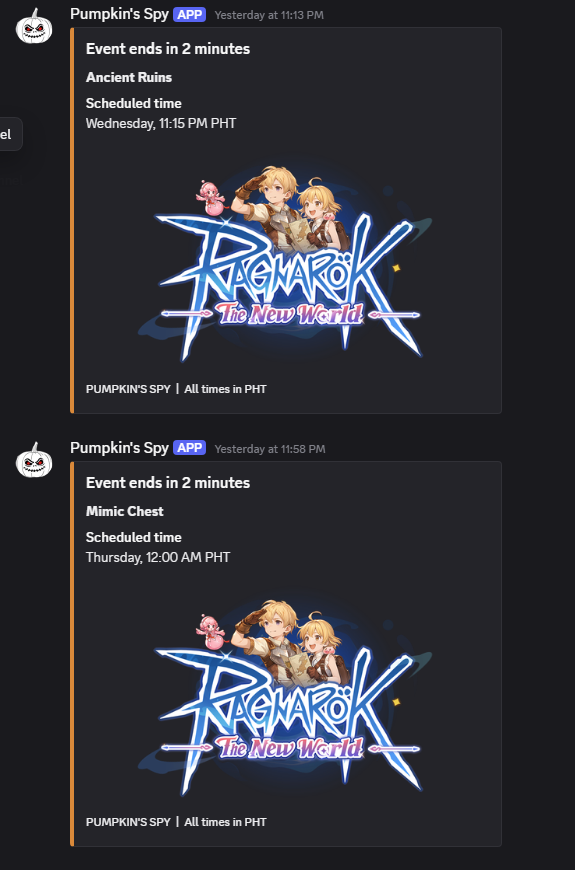

Recurring schedule
Uses a locally defined weekly event schedule, including events that cross midnight.
COMMUNITY AUTOMATION / PUMPKIN'S SPY
Automated reminders for Ragnarok New World events, delivered directly to my Discord community.
OVERVIEW
I built this AI-assisted integration to help Ragnarok New World players keep track of scheduled activities. Pumpkin's Spy sends reminders before each configured event begins and ends, allowing community members to plan their participation.
Uses a locally defined weekly event schedule, including events that cross midnight.
Supports configured destination channels across Discord servers, with separate reminder tracking for each channel.
Records successful deliveries in JSON and persists the state in a Docker volume to reduce duplicate notifications after restarts.
Responds to permitted commands with current events, upcoming events, or the day's schedule.
This uses a configured schedule rather than live game-server data. Events can change in-game; the schedule must be maintained accordingly.
WORKFLOW
OUTPUT DEMONSTRATION

The example shows two-minute warnings and scheduled ending times, including an event ending at midnight on the following day.
!checkeventList active events or the next event today.!todayShow today's event schedule, including ongoing overnight events.!helpShow available commands.DEPLOYMENT & RELIABILITY
Runs on my Ubuntu OCI Free Tier instance using Docker Compose with Node.js 22 Alpine, a non-root runtime, and restart policy.
Separates scheduling, commands, notifications, and delivery logic. Includes tests for scheduling, command responses, and reminder handling. Missed reminder windows are not sent late.
LEARNING OUTCOMES